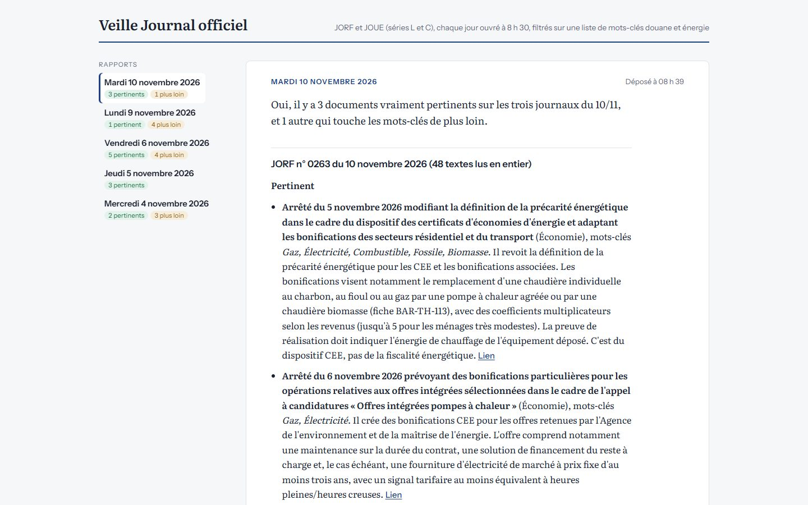

Automatisation · données publiquesAutomation · public data
Chaque jour ouvré à 8 h 30, un rapport sur le Journal officiel français et celui de l'Union européenne, filtré sur 43 mots-clés douane et énergie, classé par pertinence, avec un court résumé et le lien de chaque texte. Every working day at 8:30, a report on the French and EU Official Journals, filtered on 43 customs and energy keywords, ranked by relevance, with a short summary and a link for each text.

Parcourir chaque matin le JORF et le JOUE à la recherche des textes qui touchent la fiscalité de l'énergie et la douane prend du temps, et un texte important peut passer inaperçu.Going through the French and EU Official Journals every morning for texts on energy taxation and customs takes time, and an important text can slip through.
Un script Python lit les données ouvertes de la DILA pour le JORF et celles de l'Office des publications pour le JOUE.A Python script reads DILA open data for the French journal and Publications Office data for the EU journal.
Un agent IA lit les textes retenus et rédige le rapport selon des consignes écrites une fois pour toutes.An AI agent reads the selected texts and writes the report from fixed written instructions.
La routine tourne dans le cloud et dépose le rapport sur la page à 8 h 30, sans aucune intervention.The routine runs in the cloud and posts the report to the page at 8:30, hands-off.
La démo reprend les cinq derniers rapports, du 4 au 10 novembre 2026.The demo shows the last five reports, 4 to 10 November 2026.